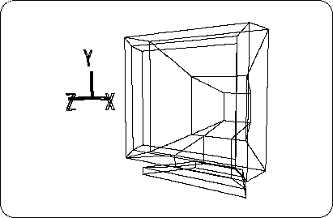

Return to previous page | Return to menu ｜ Go to next page
Coloring a model is called “material assignment”. This section explains this material assignment. Let's practice coloring the TV monitor created in Chapter 2.
Notes on description
In the text, [] indicates a menu command, and [] indicates a hierarchical (sub) menu.
[Get] → [Element]
Now load the TV monitor model created in Chapter 2 (Figure 4-1). (Example: Model name SATURN_TV_SET)
Once loaded, make sure this TV is selected (spacebar + left mouse button).

To add color, you need to change the mode from “Model” to “Matter”.
Click on the “Matter” part at the top of the screen or press the shortcut key “F5”.
Now the color of the bar at the top of the screen has changed from purple to blue and you are ready to add color.